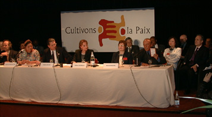

MANIFESTO 2000
FOR A CULTURE OF PEACE AND NON-VIOLENCE
Paris, March 4 {No.99-38} - The "Manifesto 2000 for a Culture of Peace and
Non-Violence," produced by a group of Nobel Peace Prize laureates - with
the help of UNESCO, within the framework of preparations for the
International Year for the Culture of Peace - in the year 2000 - was
launched publicly in Paris today by Nobel Peace Prize laureates Mairead
Corrigan Maguire (Northern Ireland), Rigoberta Menchú Tum (Guatemala)
and Adolfo Pérez Esquivel (Argentina) in the presence of UNESCO
Director-General Federico Mayor and numerous personalities.
The Manifesto is addressed to individuals and to civil society.
It is to raise awareness among people around the world who, in signing
the Manifesto, will commit themselves to adhere to the values of peace,
tolerance and solidarity and undertake to translate the values,
attitudes and modes of behaviour which underpin the culture of peace
into daily action.
UNESCO, as the United Nations system co-ordinator for the
preparation of the International Year for the Culture of Peace, has
undertaken to disseminate the Manifesto 2000 all over the world. It is
also launching a solemn appeal to all organisations, institutions and
governments to adhere to the Manifesto. The aim of this undertaking is
to collect 100 million signatures by the time of the United Nations
millennium General Assembly in September 2000.
Here is the full text of the Manifesto:
The year 2000 must be a new beginning for us all. Together we can
transform the culture of war and violence into a culture of peace and
non-violence. This demands the participation of everyone. It gives young
people and future generations values that can inspire them to shape a
world of dignity and harmony, a world of justice, solidarity, liberty
and prosperity. The culture of peace makes possible sustainable
development, protection of the environment and the personal fulfilment
of each human being.
Recognizing my share of responsibility for the future of humanity,
especially for today's children and those of future generations, I
pledge - in my daily life, in my family, my work, my community, my
country and my region - to:
1. respect the life and dignity of every person without discrimination
or prejudice;
2. practise active non-violence, rejecting violence in all its forms:
physical, sexual, psychological, economical and social, in particular
towards the most deprived and vulnerable such as children and
adolescents;
3. share my time and material resources in a spirit of generosity to put
an end to exclusion, injustice and political and economic oppression;
4. defend freedom of expression and cultural diversity, giving
preference always to dialogue and listening rather than fanaticism,
defamation and the rejection of others;
5. promote consumer behaviour that is responsible and development
practices that respect all forms of life and preserve the balance of
nature on the planet;
6. contribute to the development of my community, with the full
participation of women and respect for democratic principles, in order
to create together new forms of solidarity.
****
Please reproduce and distribute this document around you.
You can sign the Manifesto 2000 on the Internet:
www.unesco.org/manifesto2000
If you do not have access to the Internet, return the form below to:
INTERNATIONAL YEAR FOR THE CULTURE OF PEACE
UNESCO
7, place de Fontenoy - F-75352 Paris 07 SP - FRANCE
FAX : +33 1 45 68 56 38
First Name*: ______________________________ Surname Name:
Date of birth: ___________________________ Sex: M - F
Town of residence: _______________________ Country:
Date: __________________________________ Signature:
Your name, as a signatory of the MANIFESTO 2000, will appear on the
Internet website devoted to this operation:
www.unesco.org/manifesto2000.
The United Nations General Assembly proclaimed the year 2000
"International Year for the Culture of Peace." A group of Nobel Prize
Peace Laureates produced the Manifesto 2000 on the occasion of the
celebration of the 50th anniversary of the Universal Declaration of
Human Rights.
All the signatures affixed to MANIFESTO 2000 will be presented to the
General Assembly of the United Nations for the millennium in September
2000.
****
For more information contact:
UNESCO Press Service: tel. (+33) (0)1 45 68 17 44 - fax: (+33)(0)1 45 68
56 52
(Re-)Load UNESCOPRESS On-line
|